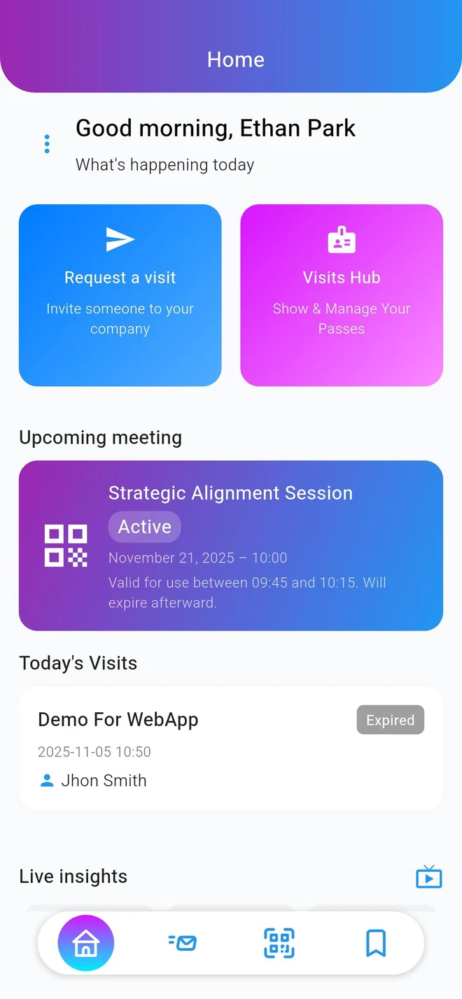
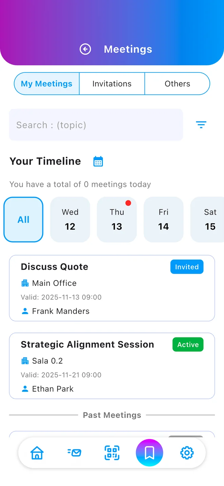
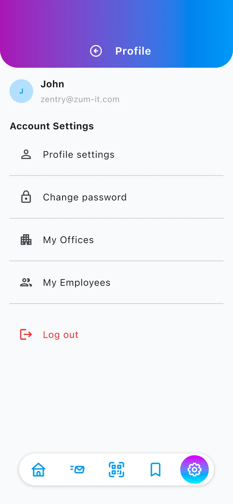
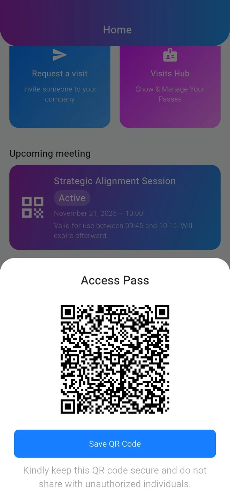
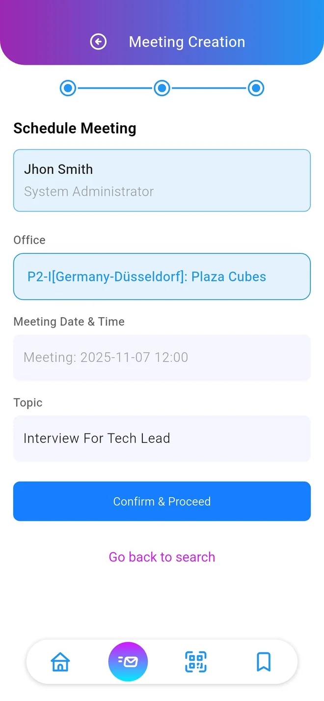

ZUM-IT · visitor access app · case 3 of 3
Zentry
Buildings need to know who is inside. I designed Zentry from zero so office managers get that record without turning the front door into a queue.
- My role
- Product Designer, alone, from zero
- Apps
- 2, on iOS and Android
- On the stores
- Since Nov 2025
- Status
- In testing, not yet sold


In 30 seconds
- The problem
- Reception writes names in a book, so nobody can say who was inside on Tuesday at three, or whose guest they were.
- My role
- The brand, the design system and every screen, alone.
- The key decision
- Each visitor pass works only around the meeting time, and the pass shows clearly when it is valid.
- Where it is
- Two apps on the App Store and Google Play since November 2025, in testing with first users.
Where it is
- 2
- Apps: ZUMZentry and ZentryStaff
- 4
- Store listings, App Store and Google Play
- 3
- People served: visitor, host, manager
- Nov 2025
- On both stores
In testing with first users and not yet sold, so there is nothing to claim about adoption yet. Anyone can install it today.
ZentryStaff, the building's app



Screens in this section are from the public store listings.
Evidence at a glance
- Status
- 2 apps on the App Store and Google Play since Nov 2025, in testing with first users, not yet sold
- Team
- Designed alone, built by the ZUM-IT developers
- My role
- Brand, design system and every screen, from zero
- What is validated
- Published on both stores and in testing
- What is not measured
- Usage data and task success
What I found: control and comfort pull in opposite directions
A company is now expected to account for every person on its premises: when they arrived, whose guest they were, how long they stayed. A paper logbook or a badge desk is easy to get around and impossible to audit. But more control usually means more friction at the door.
Three people, one doorway
- Visitor: requests a visit or accepts an invite, then shows a QR pass.
- Host: invites guests and approves requests.
- Office manager: owns the record of who came in.
The tension
The manager wants everything logged, the visitor wants nothing in the way. We designed for a visitor who opens the app once, at a desk, for a few seconds. So the record has to come out of a flow people already want to finish.
Four decisions, and what each one traded
Passes expire, they do not just exist
- Option A
- A pass that works all day. Simplest for the visitor, and nobody gets stuck at the door.
- Option B
- A pass tied to the meeting window. Secure, but it can lock a late visitor out.
- My call
- A pass works around the meeting, with a grace window, and says so: "valid for use between 09:45 and 10:15".
- Why
- An all-day pass is a key that keeps working after the visit.
- The trade-off
- A late visitor can still get stuck. The grace window absorbs early and late arrivals, and the pass states its window so nobody learns the rule at the scanner.

Invitations go both ways
- Option A
- Hosts invite, full stop. Maximum control, but a visitor with a real reason has to phone someone.
- Option B
- Let visitors request a visit too. Convenient, but it opens a door into the building.
- My call
- Visitors can request a visit, but it stays a request until a host accepts, declines or reschedules it.
- Why
- No more phone calls, and the control stays with whoever says yes.
- The trade-off
- A request is still a way in, so nothing happens until a host says yes, and every state is said in plain words.

Every visit has a backup host
- Option A
- One host per visit. Clean data, obvious accountability.
- Option B
- Add a secondary host. More to fill in, more to model.
- My call
- Every visit carries a host and a secondary host.
- Why
- Hosts get sick or stuck in traffic, and the visitor should not wait with nobody responsible.
- The trade-off
- One more field to fill in and more data to model, kept inside the three-step scheduling flow.

A security tool that feels like a consumer app
- Option A
- Design it like enterprise security software. Dense, admin first.
- Option B
- Design the visitor and host side like a consumer app, and keep the depth for the manager.
- My call
- The home is two big choices, "Request a visit" and "Visits Hub". The admin depth lives in a second app, ZentryStaff.
- Why
- At a reception desk, density costs entries, not clicks.
- The trade-off
- Two apps to publish and maintain instead of one. They share the same shell and navigation, so only the capability differs.

Who did what
| Research and problem framing | Me |
|---|---|
| Prioritisation | With the PO |
| UI and flows (every screen) | Me, alone |
| Brand and design system | Me, alone |
| Build | The developers |